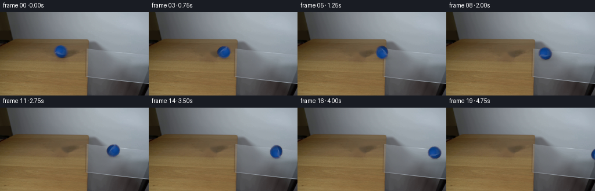
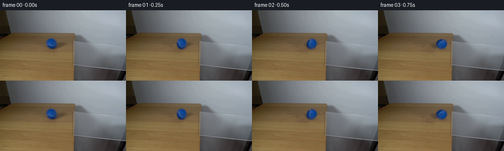

CODING AGENTS AS PIXEL WORLD MODELS
traex/GPT-5.6-Sol · 0026
点击播放 · 原生 RGB 像素
逐轮保存的候选
回放视频、检查图与代码变化。
每份候选均可单独播放。实际图片检查记录在下方工具轨迹中。
候选 01播放与检查图
点击播放 · 原生 RGB 像素


展开代码变化
--- 上一保存版本
+++ 本次保存版本
@@ -0,0 +1,183 @@
+"""Generate the requested locked-camera tennis-ball demonstration.
+
+The supplied photograph is retained as the plate. The only photographed
+moving object is isolated from frame zero, the small area it occupied is
+reconstructed, and that same (real, photographed) ball is moved along the
+perspective of the tabletop and glass. Working from the photographed ball
+rather than drawing a replacement preserves the lighting and texture at this
+very small output resolution.
+"""
+
+from pathlib import Path
+
+import cv2
+import numpy as np
+from PIL import Image
+
+import artifact_io
+
+
+W, H = 256, 144
+N = 20
+
+
+def make_clean_plate(frame: np.ndarray) -> np.ndarray:
+ """Remove the frame-zero ball and its tiny contact shadow."""
+ # The ball is centred at (104.3, 67.7), with a radius just under 12 px.
+ # A slightly asymmetric mask also removes the two-pixel contact shadow.
+ mask = np.zeros((H, W), np.uint8)
+ cv2.ellipse(mask, (104, 68), (13, 13), 0, 0, 360, 255, -1)
+ cv2.ellipse(mask, (106, 78), (11, 4), 0, 0, 360, 255, -1)
+
+ # Telea interpolation follows the gently varying colour/wood grain around
+ # the masked patch much better than a flat painted disk would.
+ bgr = cv2.cvtColor(frame, cv2.COLOR_RGB2BGR)
+ clean = cv2.inpaint(bgr, mask, 4.0, cv2.INPAINT_TELEA)
+ clean = cv2.cvtColor(clean, cv2.COLOR_BGR2RGB)
+
+ # Inpainting naturally becomes a little too smooth. Add back a very faint
+ # local wood-like residual, tapered to zero at the mask edge. The residual
+ # is sampled from immediately to the left, hence remains image-derived.
+ yy, xx = np.mgrid[0:H, 0:W]
+ inner = ((xx - 104.0) / 11.7) ** 2 + ((yy - 68.0) / 12.0) ** 2
+ taper = np.clip((1.0 - inner) * 0.32, 0.0, 0.23)[..., None]
+ donor = np.roll(frame.astype(np.float32), 27, axis=1)
+ donor_smooth = cv2.GaussianBlur(donor, (0, 0), 2.2)
+ residual = donor - donor_smooth
+ clean = np.clip(clean.astype(np.float32) + taper * residual, 0, 255)
+ return clean.astype(np.uint8)
+
+
+def extract_ball(frame: np.ndarray, plate: np.ndarray):
+ """Return a compact RGB crop and a soft, circular photographic matte."""
+ x0, y0, size = 89, 53, 31
+ crop = frame[y0 : y0 + size, x0 : x0 + size].copy()
+ bg = plate[y0 : y0 + size, x0 : x0 + size].copy()
+
+ yy, xx = np.mgrid[0:size, 0:size]
+ # Centre within this crop is (15.3, 14.7). The original lens projection is
+ # very slightly wider than tall.
+ rho = np.sqrt(((xx - 15.3) / 11.8) ** 2 + ((yy - 14.7) / 11.25) ** 2)
+ geometric = np.clip((1.075 - rho) / 0.105, 0.0, 1.0)
+
+ # Chroma provides an additional guard against carrying any brown table
+ # pixels with the ball at the antialiased silhouette.
+ f = crop.astype(np.float32)
+ chroma = f[..., 2] - 0.5 * (f[..., 0] + f[..., 1])
+ chroma_matte = np.clip((chroma + 5.0) / 35.0, 0.0, 1.0)
+ alpha = geometric * np.where(rho < 0.87, 1.0, chroma_matte)
+ alpha = cv2.GaussianBlur(alpha.astype(np.float32), (0, 0), 0.32)
+ alpha = np.clip(alpha, 0.0, 1.0)
+
+ # Decontaminate only the partially transparent rim. This removes the thin
+ # brown halo that a naive crop would carry onto the pale glass.
+ a = alpha[..., None]
+ foreground = crop.astype(np.float32)
+ valid = (a > 0.16) & (a < 0.98)
+ solved = (foreground - (1.0 - a) * bg.astype(np.float32)) / np.maximum(a, 0.16)
+ foreground = np.where(valid, solved, foreground)
+ foreground = np.clip(foreground, 0, 255).astype(np.uint8)
+ return foreground, alpha
+
+
+def ball_path(i: int):
+ """Constant-speed rolling path, aligned to the photograph's perspective."""
+ # 8.2 px/frame at 4 fps reads as a moderate real-world roll. The small
+ # downward image-space drift follows the receding side edges of the glass.
+ x = 104.3 + 8.2 * i
+ if x <= 149.0:
+ y = 67.7 + 0.032 * (x - 104.3)
+ else:
+ y = 69.13 + 0.097 * (x - 149.0)
+ return x, y
+
+
+def add_shadow(image: np.ndarray, cx: float, cy: float, on_glass: bool) -> np.ndarray:
+ """Add a restrained moving contact shadow before compositing the ball."""
+ yy, xx = np.mgrid[0:H, 0:W].astype(np.float32)
+ # The broad shadow is shifted down/right by the upper-left room light.
+ sx, sy = cx + 1.7, cy + 10.0
+ broad = np.exp(-0.5 * (((xx - sx) / 8.3) ** 2 + ((yy - sy) / 2.35) ** 2))
+ contact = np.exp(-0.5 * (((xx - (cx + 0.5)) / 4.5) ** 2 + ((yy - (cy + 10.7)) / 1.05) ** 2))
+ strength = (0.105 if on_glass else 0.145) * broad + 0.095 * contact
+ # Transparent glass produces a less opaque, slightly cooler shadow.
+ tint = np.array([12.0, 14.0, 18.0] if on_glass else [19.0, 16.0, 12.0])
+ out = image.astype(np.float32) * (1.0 - strength[..., None])
+ out += tint * strength[..., None] * 0.22
+ return np.clip(out, 0, 255).astype(np.uint8)
+
+
+def composite_ball(
+ image: np.ndarray,
+ ball_rgb: np.ndarray,
+ ball_alpha: np.ndarray,
+ cx: float,
+ cy: float,
+ degrees: float,
+) -> np.ndarray:
+ """Rotate and composite the photographed ball at a subpixel position."""
+ size = ball_rgb.shape[0]
+ center = (15.3, 14.7)
+ # Positive travel to the right corresponds to clockwise rotation.
+ M = cv2.getRotationMatrix2D(center, degrees, 1.0)
+ rgb_rot = cv2.warpAffine(
+ ball_rgb, M, (size, size), flags=cv2.INTER_CUBIC,
+ borderMode=cv2.BORDER_CONSTANT, borderValue=(0, 0, 0)
+ )
+ a_rot = cv2.warpAffine(
+ ball_alpha, M, (size, size), flags=cv2.INTER_LINEAR,
+ borderMode=cv2.BORDER_CONSTANT, borderValue=0
+ )
+
+ # Subpixel translation is included in a second affine operation so the
+ # motion does not jitter between integer pixel centres.
+ left = cx - center[0]
+ top = cy - center[1]
+ x_int, y_int = int(np.floor(left)), int(np.floor(top))
+ dx, dy = left - x_int, top - y_int
+ T = np.float32([[1, 0, dx], [0, 1, dy]])
+ rgb_rot = cv2.warpAffine(rgb_rot, T, (size, size), flags=cv2.INTER_CUBIC,
+ borderMode=cv2.BORDER_CONSTANT)
+ a_rot = cv2.warpAffine(a_rot, T, (size, size), flags=cv2.INTER_LINEAR,
+ borderMode=cv2.BORDER_CONSTANT)
+
+ # Clip the compact sprite against the image (important in the last frame).
+ xa, ya = max(0, x_int), max(0, y_int)
+ xb, yb = min(W, x_int + size), min(H, y_int + size)
+ if xa >= xb or ya >= yb:
+ return image
+ sx0, sy0 = xa - x_int, ya - y_int
+ sx1, sy1 = sx0 + (xb - xa), sy0 + (yb - ya)
+ a = np.clip(a_rot[sy0:sy1, sx0:sx1], 0, 1)[..., None]
+ src = rgb_rot[sy0:sy1, sx0:sx1].astype(np.float32)
+ dst = image[ya:yb, xa:xb].astype(np.float32)
+ image = image.copy()
+ image[ya:yb, xa:xb] = np.clip(src * a + dst * (1.0 - a), 0, 255).astype(np.uint8)
+ return image
+
+
+def generate(case_dir: Path) -> np.ndarray:
+ original = np.asarray(Image.open(case_dir / "first_frame.png").convert("RGB"), dtype=np.uint8)
+ assert original.shape == (H, W, 3)
+
+ plate = make_clean_plate(original)
+ ball_rgb, ball_alpha = extract_ball(original, plate)
+
+ frames = [original.copy()] # strict contract: frame 00 is byte-identical
+ radius = 10.85
+ for i in range(1, N):
+ cx, cy = ball_path(i)
+ current = plate.copy()
+ current = add_shadow(current, cx, cy, on_glass=(cx >= 146.0))
+ distance = cx - 104.3
+ rotation = -np.degrees(distance / radius)
+ current = composite_ball(current, ball_rgb, ball_alpha, cx, cy, rotation)
+ frames.append(current)
+ return np.stack(frames).astype(np.uint8)
+
+
+if __name__ == "__main__":
+ root = Path(__file__).resolve().parent
+ result = generate(root)
+ artifact_io.save(result, root)
+
可观测工具轨迹
实际执行的命令与返回图片。
命令 1exit 0
/bin/bash -lc 'cat GENERATION_RULES.md'
命令 2exit 0
/bin/bash -lc "cat prompt.txt && printf '\\n--- files ---\\n' && find . -maxdepth 2 -type f -printf '%p\\n' | sort"
命令 3exit 0
/bin/bash -lc "python3 - <<'PY'
from PIL import Image
im=Image.open('first_frame.png')
print(im.mode, im.size)
import numpy as np
x=np.array(im)
print(x.min(axis=(0,1)),x.max(axis=(0,1)),x.mean(axis=(0,1)))
PY"命令 4exit 0
/bin/bash -lc 'cat artifact_io.py'
命令 5exit 0
/bin/bash -lc "python3 - <<'PY'
from PIL import Image
import numpy as np
im=np.array(Image.open('first_frame.png'))
# print block means RGB 16x9, each 16 pixels
for by in range(9):
print('ROW',by)
for bx in range(16):
a=im[by*16:(by+1)*16,bx*16:(bx+1)*16]
print('%3d,%3d,%3d'%tuple(a.mean((0,1)).astype(int)),end=' | ')
print()
# identify blue dominance components
m=(im[:,:,2]>im[:,:,0]*1.2)&(im[:,:,2]>im[:,:,1]*1.1)&(im[:,:,2]>80)
ys,xs=np.where(m)
print('blue',len(xs), (xs.min(),ys.min(),xs.max(),ys.max()) if len(xs) else '')
# connected comps cv
import cv2
n,l,st,cent=cv2.connectedComponentsWithStats(m.astype('uint8'))
for i in np.argsort(st[1:,4])[-10:][::-1]+1: print(i,st[i].tolist(),cent[i].tolist())
PY"命令 6exit 0
/bin/bash -lc "python3 - <<'PY'
import cv2,numpy as np
im=cv2.imread('first_frame.png')
g=cv2.cvtColor(im,cv2.COLOR_BGR2GRAY)
# strongest horizontal / vertical gradients per coordinate
sx=np.abs(np.diff(g.astype(float),axis=1)).mean(0)
sy=np.abs(np.diff(g.astype(float),axis=0)).mean(1)
print('X grad', sorted(enumerate(sx),key=lambda z:z[1],reverse=True)[:25])
print('Y grad', sorted(enumerate(sy),key=lambda z:z[1],reverse=True)[:25])
# corners/sample pixel grid
rgb=im[:,:,::-1]
for y in [0,10,20,30,40,50,60,70,80,90,100,110,120,130,143]:
print(y, [tuple(rgb[y,x]) for x in [0,16,32,48,64,80,96,112,128,144,160,176,192,208,224,240,255]])
PY"命令 7exit 0
/bin/bash -lc "python3 - <<'PY'
from PIL import Image
import numpy as np
im=np.array(Image.open('first_frame.png'))
for y in range(53,82):
s=''
for x in range(89,120):
r,g,b=map(int,im[y,x]); d=b-(r+g)//2
ch=' '
if d>55: ch='#'
elif d>35:ch='O'
elif d>20:ch='o'
elif d>10:ch='.'
elif max(r,g,b)<50:ch='x'
s+=ch
print(f'{y:3} {s}')
print('crop exact center horizontal')
for y in [56,57,58,60,62,64,66,68,70,72,74,76,78,80]:
print(y,[tuple(map(int,im[y,x])) for x in range(92,118)])
PY"命令 8exit 0
/bin/bash -lc "python3 - <<'PY'
import cv2, numpy as np
im=cv2.imread('first_frame.png')
g=cv2.cvtColor(im,cv2.COLOR_BGR2GRAY)
e=cv2.Canny(g,20,50)
lines=cv2.HoughLinesP(e,1,np.pi/180,threshold=18,minLineLength=15,maxLineGap=6)
for q in sorted(lines[:,0].tolist(), key=lambda v:-((v[2]-v[0])**2+(v[3]-v[1])**2))[:80]:
x1,y1,x2,y2=q; print(q, 'len',round(np.hypot(x2-x1,y2-y1),1),'ang',round(np.degrees(np.arctan2(y2-y1,x2-x1)),1))
PY"命令 9exit 0
/bin/bash -lc "python3 generate.py && python3 - <<'PY'
import numpy as np
from PIL import Image
x=np.load('pixels.npz')['pixels']
print('pixels',x.shape,x.dtype)
a=np.array(Image.open('first_frame.png')); b=np.array(Image.open('frames/00.png'))
print('frame00 identical',np.array_equal(a,b), 'diff',np.abs(a.astype(int)-b.astype(int)).max())
for i in range(20):
im=np.array(Image.open(f'frames/{i:02d}.png'))
# blue center
m=(im[:,:,2]>im[:,:,0]*1.2)&(im[:,:,2]>im[:,:,1]*1.1)&(im[:,:,2]>80)
ys,xs=np.where(m)
print(i, len(xs), (round(xs.mean(),1),round(ys.mean(),1)) if len(xs) else None)
PY"命令 10exit 0
/bin/bash -lc "python3 - <<'PY'
import generate
from pathlib import Path
from PIL import Image
import numpy as np, cv2
im=np.array(Image.open('first_frame.png')); p=generate.make_clean_plate(im)
for y in [56,60,64,68,72,76,80]:
print(y, [tuple(p[y,x]) for x in range(92,118,4)])
Image.fromarray(p).save('.tmp/plate.png')
# quality around patch: second differences versus neighbors
print('plate center mean/std',p[57:80,92:118].mean((0,1)),p[57:80,92:118].std((0,1)))
print('neighbor',p[57:80,65:91].mean((0,1)),p[57:80,65:91].std((0,1)))
PY
ffprobe -v error -show_entries stream=codec_name,width,height,r_frame_rate -of default=nw=1 index.html 2>/dev/null || true
ls -lh pixels.npz inspection.png index.html frames/00.png generate.py"保存候选 1 份；完成命令 10 次；可验证图片返回 0 张。原始 API 响应与完整日志保留在本地。